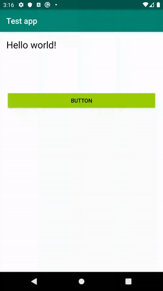

Change Theme Dynamically with Circular Reveal Animation on Android
Introduction⌗
Dark theme on Android is on a hype at the moment. More and more apps add support for Dark theme over time allowing users to customize their phones, save battery and provide better accessibility. Though another trend which grows today is animated theme changes. First app I saw support of this was Telegram:

After that in different modifications such feature started to appear in other apps, for example VK. The effect is amazing. And in this article we’ll go into how to implement such functionality in your app.
Disclaimer: Android UI Toolkit currently is pretty bad, especially in dynamic styling. To implement such a feature one need to have custom views with custom theming support in the app. If your app is small, then there is no actual need for investing time into implementing your custom views. Hopefully with help of Jetpack Compose we’ll get more adequate dynamic theming and implementation of such a feature will be more straightforward. Though in this article we’ll try to get some simple solution for dynamic customization.
Basics⌗
Thanks to developers of Telegram app for making code open sourced, so we can take a look at how developers implemented this feature in the repository (lines highlighted). There is a lot of code, so let’s get the idea of the whole algorithm.
In Android 9 we have native Dark Theme support. The issue is that it is part of configuration and Android UI Toolkit doesn’t allow to change configuration dynamically and to change theme it is needed to restart all the activities in the app. That is clearly not the solution we are looking for. Basic support for Dark Theme with app restart is fine and is better than only providing just light theme. But to provide a really good UX it seems without custom theming we’ll not be able to achieve what we want.
The main algorithm is the following:
-
we have some hidden ImageView on the screen
-
on request to change theme we draw all the content of the screen on the Canvas
-
convert content of Canvas into Bitmap and put it into ImageView
-
change theme on all views
-
start circular reveal animation for our **content **of the screen (from 0 radius to full size)
This will create animation when new theme reveals with animation over old theme. Sounds hacky, though pretty working solution.
Also with such a technique we can implement other different effects, for example we can implement old theme to disappear with revealing new theme underneath. For such we’ll have:
-
hidden ImageView as in previous case with setting content of screen as Bitmap into it
-
change theme on all views
-
start circular reveal animation for our **image **(from full size to 0 radius)
Let’s dive into how this can be implemented
Implementation⌗
Layout⌗
We’ll start from describing our test layout:
Here we’ll have our hidden ImageView and container (LinearLayout containing out test TextView and Button which we’ll use in our test).
Change Theme⌗
Here is our code which is responsible to change theme with animation:
Let’s look in details what we do here:
-
first of all we make a defensive check to not start new animation when previous is still in progress
-
then we get the dimensions of the container with content to create bitmap, draw all the content into that bitmap and set that bitmap into ImageView
-
we have left TODO in the code, where we’ll need to change theme for all views. We’ll get back to that later
-
finally we start reveal animation for container, which will actually reveal our new theme
Next we should somehow make our views to support dynamic theming.
ThemeManager⌗
We’ll create single place for managing application theme — ThemeManager, and object which describes the Theme itself. Theme will contain different sub-Themes for each design component — TextView, Button etc.
For example for TextView we can create the following Theme description:
data class TextViewTheme(
@ColorRes
val textColor: Int
)
Similarly for container (e.g. LinearLayout) we can create:
data class ViewGroupTheme(
@ColorRes
val backgroundColor: Int
)
And the Theme itself will be enum containing different combinations mapped over some finite number of themes — for example LIGHT and DARK:
enum class Theme(
val buttonTheme: ButtonTheme,
val textViewTheme: TextViewTheme,
val viewGroupTheme: ViewGroupTheme
) {
DARK(
buttonTheme = ButtonTheme(
backgroundTint = android.R.color.holo_green_dark,
textColor = android.R.color.white
),
textViewTheme = TextViewTheme(
textColor = android.R.color.white
),
viewGroupTheme = ViewGroupTheme(
backgroundColor = android.R.color.background_dark
)
),
LIGHT(
buttonTheme = ButtonTheme(
backgroundTint = android.R.color.holo_green_light,
textColor = android.R.color.black
),
textViewTheme = TextViewTheme(
textColor = android.R.color.black
),
viewGroupTheme = ViewGroupTheme(
backgroundColor = android.R.color.background_light
)
)
}
And our ThemeManager will just provide single instance of current theme:
object ThemeManager {
var theme = Theme.LIGHT
}
Custom Views⌗
Next we need to create our own wrappers for views to support changes of dynamic theme changing. Let’s make our own custom TextView as example:
We just create our view with setTheme method, where we apply all the required fields to be styled.
Then we replace in xml our TextView with com.MyTextView and in our TODO access that view and set theme. Such approach would work, but the issue is that it doesn’t scale and it requires layout files changes. But there is a way to fix all the issues, let’s see how.
Dynamic theme changes⌗
Instead of explicitly setting themes on each view it would be better if views subscribed to theme changes and reactively updated by themselves. For this we’ll add a bit more functionality into ThemeManager — we’ll add ability to add listeners. Yes, listeners in 2020 :) One can use RxJava or kotlin Flow, it actually doesn’t matter. Listeners will be enough, so, we’ll use them.
Nothing really interesting, just added listeners, ability to add and remove them and we update listeners on each change of theme.
Views with reactive theme changes support⌗
Using these listeners we update our MyTextView to trigger update on theme changed:
Instead of setTheme method we now have onThemeChanged. And in different callbacks of View lifecycle we subscribe and unsubscribe from ThemeManager.
Custom LayoutInflater⌗
In order to not change our layouts we can use custom layout inflater factories. The idea is that we can intercept inflating views based on the names (“TextView”, “Button”, “com.MyTextView” etc.). And we can provide our own implementations for base views. Same approach is done in AppCompat.
Basic implementation of the LayoutInflater.Factory2 looks like this:
We intercept in onCreateView some views which support our dynamic theme changes and other views we ask for AppCompatDelegate to create.
But there is one trick with setting this factory ‚Äî it should be done before super.onCreate(…):
Finally⌗
And we’re good! Let’s look at the results (sorry, for artifacts in gif, unfortunately video recorder in Android Studio didn’t want to record without them :( ):

Also if we change our setTheme method we can implement another version:

Awesome results, it works pretty smooth and provides a good UX with not that huge effort so far.
What next⌗
You can find code for these in this gist. Also if you’d like to play with this as an exercise you can change place where reveal animation starts. Currently we use center for simplicity, but you can use for example Switch (which changes theme) as a pivot.
One can take a look at sample project here. But, please, take it as inspiration and don’t copy paste as is into production. Thank you
Conclusion⌗
I hope you found this article useful and maybe some ideas will help you to implement new cool features in your apps. Don’t forget to try new things, read code written by others, add animations to your app for better UX.
Happy coding!
*Thanks for reading! If you enjoyed this article you can like it by clicking on theüëè button (up to 50 times!), also you can **share *this article to help others.
Have you any feedback, feel free to reach me on twitter, facebook К The latest Tweets from К (@krossovochkin). You want to see a miracle, son? Be the miracle. Minsk, Belarustwitter.com